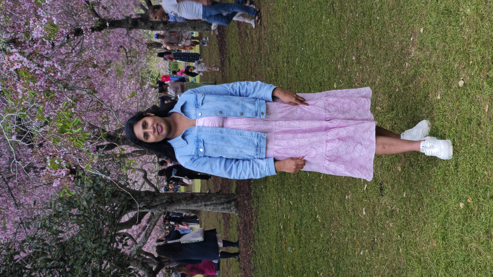

LAVANYA KAZA

COMPUTER SCIENCE GRADUATE
Auckland, New Zealand
Phone: +64 224951082
Email: lavanyasetti19@gmail.com
PROFESSIONAL SUMMARY
Computer Science graduate with knowledge of C programming, SQL, web development and Microsoft Office. Completed a six-month IT internship with experience in programming and databases. Also experienced in customer service and administrative support. Quick learner with good communication and problem-solving skills
EDUCATION
Bachelor of Technology (B.Tech) – Computer Science and Engineering
JNTUK University, India | 2016–2020
WORK EXPERIENCE
Customer Care Representative | KSK Telecom and Property Services
December 2025 – July 2026
- Assisted customers with enquiries and service-related questions.
- Managed customer communications and follow-ups.
- Supported appointment scheduling and administrative tasks.
IT Intern | [Company Name], India
August 2021 – February 2022
- Worked with C programming and assisted with database-related tasks
- Supported basic technical and programming activities.
- • Developed practical problem-solving and technical skills.
TECHNICAL SKILLS
Programming: C, basic Python, basic Java
Web Development: HTML, CSS, JavaScript, Bootstrap
Database: SQL, PostgreSQL
Office Applications: Microsoft Word, Excel, PowerPoint
PERSONAL SKILLS
- Communication
- Customer service
- Problem-solving
- Teamwork
- Time management
- Adaptability